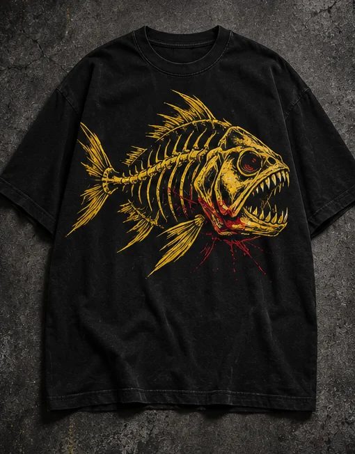
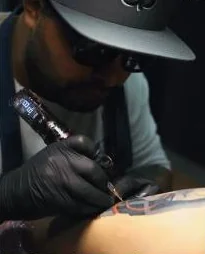
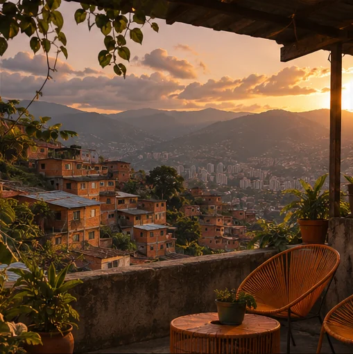
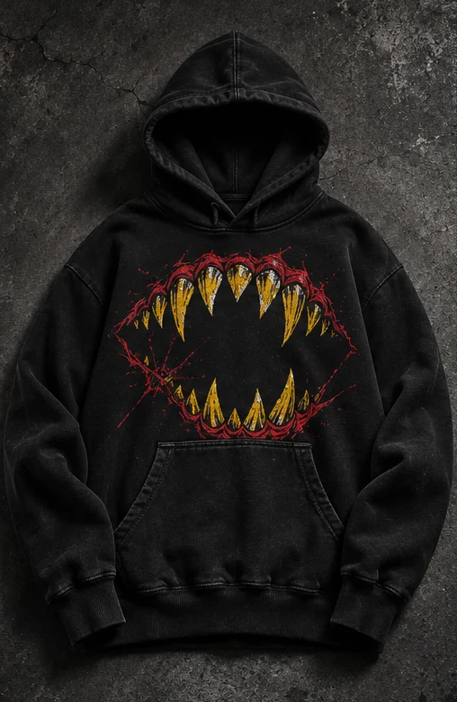
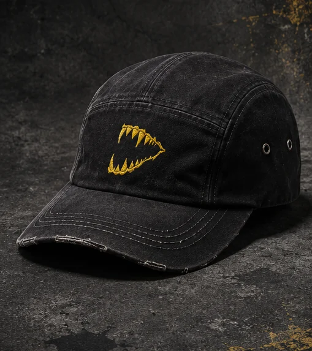

MuestraCamiseta Piraña
Negro · Estampado frontal
Medellín, Colombia
Tatuaje y graffiti en Medellín. Del estudio al mirador y de ahí a la ropa.
Ver tatuajes
Quién es Daniel GRD
Daniel GRD es tatuador y artista urbano de Medellín. En sus tatuajes explora el realismo y el surrealismo. En el graffiti, sus letras y personajes forman parte del mismo universo gráfico.
Explorar el portafolioPortafolio de tatuajes
Estudio y mirador · Popular 2
El estudio de Daniel también es un mirador en el Popular 2, Medellín. Un lugar para parchar y mirar la ciudad desde la ladera.

Ropa urbana · Catálogo de muestra
El trazo del graffiti llevado a camisetas, buzos y gorras. Explora las prendas de muestra y prueba el pedido por WhatsApp.

MuestraNegro · Estampado frontal

MuestraNegro · Con capucha

MuestraNegro · Bordado frontal